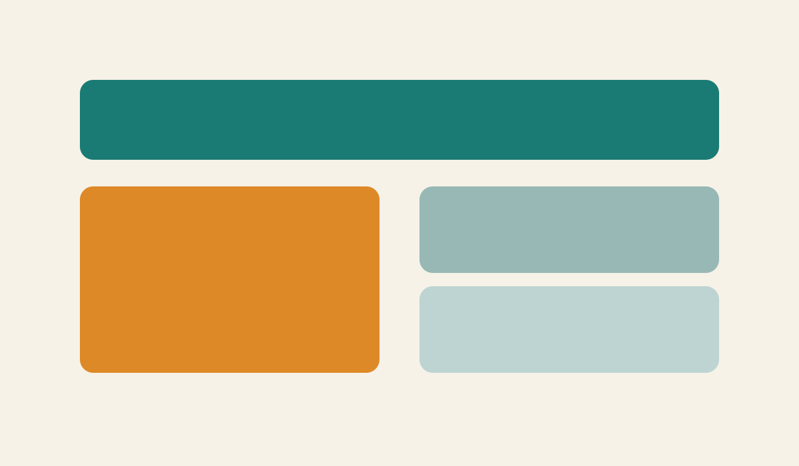

Content Page
Why Scrollytelling Improves Communication
This page is intentionally less animated than the homepage. It keeps a classic reading flow while preserving the same design system, spacing, typography, and visual language.
Content Page
This page is intentionally less animated than the homepage. It keeps a classic reading flow while preserving the same design system, spacing, typography, and visual language.
Stories are easier to follow when information appears in steps instead of all at once. This creates momentum and improves retention.
Scroll sections make it obvious what matters now and what comes next, so users spend less effort deciding where to look.

A strong call to action at the end of a guided experience performs better than isolated buttons on crowded static pages.

Return to the homepage to re-experience the full scrollytelling flow.
Back to Homepage